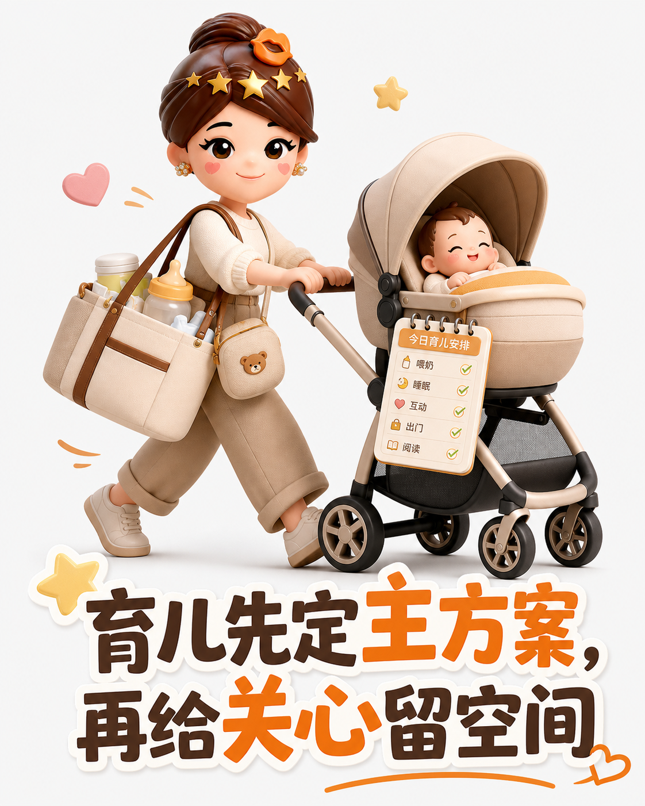

婆媳不是同事，把家庭分歧变成可协商的边界
很多婆媳矛盾，并非谁更难相处，而是两套生活经验挤进同一套日常。解决它，靠的不是说服，而是把权责、标准和选择讲清楚。
先分责任，再谈方法
菜市场最容易暴露节奏差：长辈看重价格和挑选，年轻人更在意省时。与其站在摊前互相催促，不如让擅长比较的人做决定，让赶时间的人负责搬运与结账。合作的关键，不是步调完全一致，而是彼此都不用证明自己更会过日子。
育儿只设一位主驾驶
围绕衣服穿多少、作息怎么排，经验和知识常常同时发声。先由主要照料者确定方案，再给长辈留下可调整的范围；遇到健康与安全问题，则以可靠专业建议为准。规则少而清楚，比全家随时开辩论会更省力。

给厨房保留两种味道
油盐轻重背后，其实是几十年形成的口味。无需把一张菜谱变成家庭标准：各自掌勺、轮流上桌，愿意时互相尝一口。能共处的关系，不靠消灭差异，而靠边界之外仍保留好奇与善意。